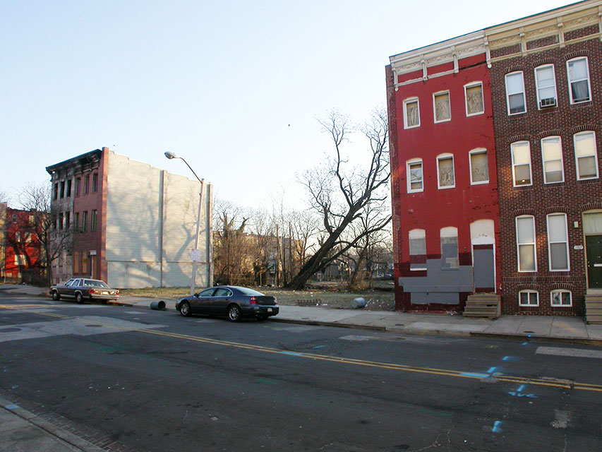

| Margaret Sanders Design Mart 210 |
 This is my instructional website on how to merge two photos via Adobe Photoshop CS6. You can click the Before, During, or After links to view all the aspects of my final picture. Also here are some fun links you can browse to help you along the way....
Fun Links
|